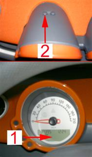

Note:
Reset service indicator shall only be performed after a service has been performed.
Test prerequisites:
Battery voltage above 11 V.
No faults stored in the fault memory.
Ignition OFF.
Procedure:
Switch on ignition.
Select maintenance indicator (1), by pressing service button (2) twice within the first 4 seconds from ignition is switched on.
See pictures below for numbering.
Switch off the ignition within 10 seconds after the maintenance indicator is displayed.
The maintenance indicator (1) remains in the diplay.
Press service button (2) of instrument cluster and switch on the ignition with the button depressed.
Keep pressing the service button (2) for further 10 seconds.
As confirmation that the procedure is performed, is the next maintenance interval value displayed (starting distance).
